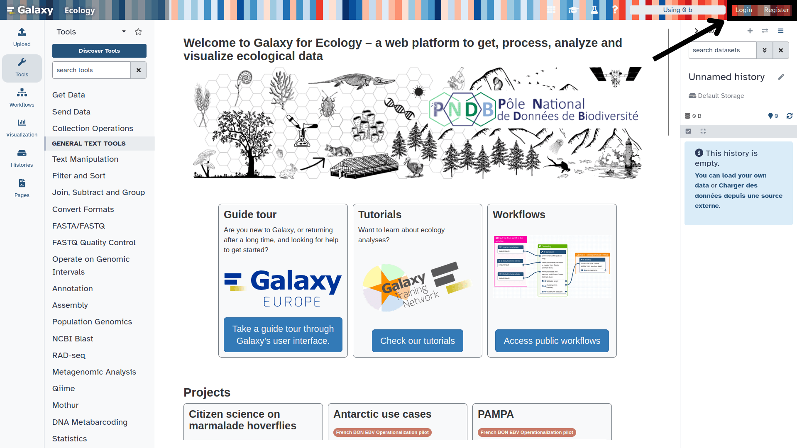
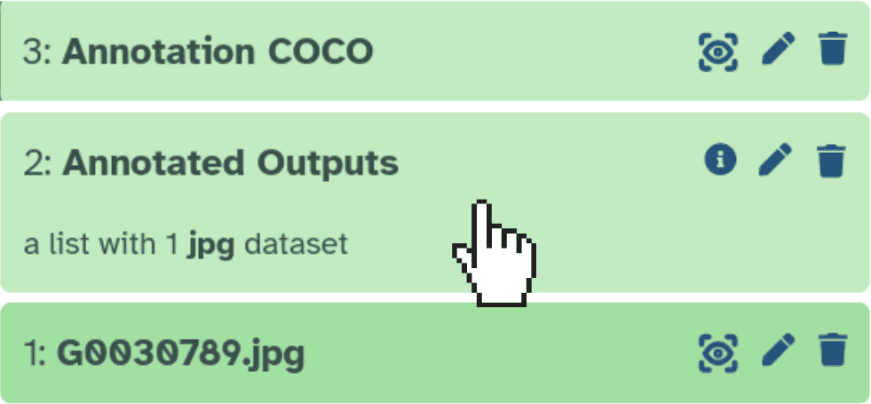
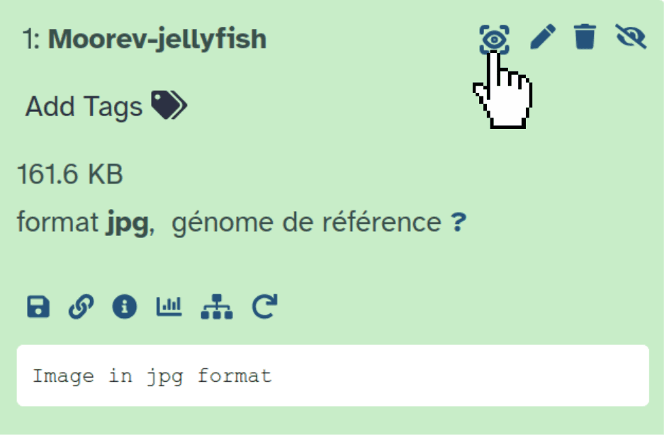
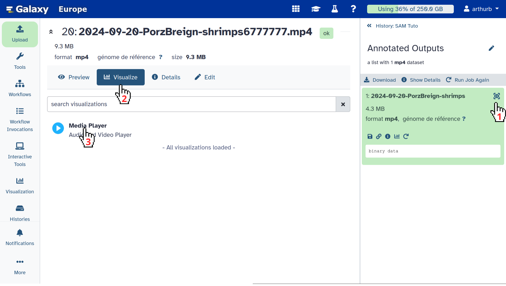
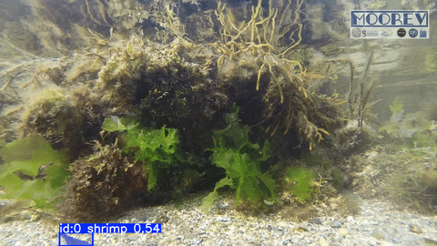

This tutorial will guide you through using the SAM3 ( Galaxy version 1.0.1+galaxy4) (Segment Anything Model 3) tool on Galaxy. SAM3 can automatically detect and segment objects in images or videos using text prompts, with no specific training required.
We will work through two concrete examples from the Moorev project:
Go to your Galaxy instance (please verify that the Galaxy instance you want to use propose SAM3 tool as Galaxy Europe is doing)
Log in or create an account

This screenshot shows the Galaxy Ecology instance, available at usegalaxy.eu
The Galaxy home page is divided into 3 panels:
Tools on the left
The visualisation panel in the centre
The history of analyses and files on the right
The first time you use Galaxy, there will be no files in your history panel.
Loading data into Galaxy
Before running SAM3 Galaxy tool, you need to import the following files into Galaxy:
The jellyfish photo: https://zenodo.org/records/19890809/files/Moorev-jellyfish.jpg
The shrimp video: https://zenodo.org/records/19891364/files/2024-09-20-PorzBreign-shrimps.mp4
Copy the link location
Click galaxy-uploadUpload at the top of the activity panel
Select galaxy-wf-editPaste/Fetch Data
Paste the link(s) into the text field
Press Start
Close the window
Warning: File format not recognised?
If you want to try with other files, make sure the file extension is correct before uploading, as Galaxy may not detect it automatically. In that case, two options:
During upload, specify the format using the Type (set all) field
From the history, click the galaxy-pencilpencil icon, go to the Datatype tab and search for your extension
Segmenting an image: the jellyfish photograph
In this first section, we will run SAM3 Galaxy tool on the photo Moorev-jellyfish.jpg to detect and segment the jellyfish.
Type SAM3 in the tool search bar at the top left, then click on the tool in the results.
SAM3 Semantic Segmentation ( Galaxy version 1.0.1+galaxy4) with these parameters:
param-file“Model data”: Segment Anything Model 3 (SAM 3) (default)
param-select“Input type”: One or more images (default)
param-file“Input images”: Moorev-jellyfish.jpg
param-select“Output formats”: COCO
param-text“Text prompt”: jellyfish
version“Confidence threshold”: 0.5
version“Video frame stride”: 5 (default)
param-toggle“Show bounding boxes on annotated output”: Yes (default)
param-toggle“Normalize outputs?”: No (default)
The text prompt should describe the object to segment in English, using simple and precise terms.
To detect multiple classes at once, separate them with commas:
jellyfish, shrimp, fish
Avoid overly vague descriptions like animal if you are specifically looking for a jellyfish.
You can also use more descriptive prompt like small blue fish, but results may vary depending on the objects you want to detect.
Click Run Tool
Comment: Processing time
Processing may take a few minutes depending on the image size and the resources available on the server. Wait until the outputs appear in green in the history.
Once processing is complete, the following outputs appear in your history:
COCO Annotation: the annotations.json file containing the segmentation masks
Annotated Outputs: the collection of annotated images with overlaid masks
Viewing the annotated result
You should see the jellyfish outlined with a coloured mask and a bounding box.
Click on Annotated Outputs in the history panel:

Then use the galaxy-eye icon to display the image in the central panel:

Or click galaxy-save to download the file directly.
Look at the content of your COCO Annotation file in your history
Use galaxy-eye to view the JSON, or galaxy-save to download it
The file contains the images, annotations, and categories fields. Each annotation includes:
segmentation: the polygon coordinates of the mask
bbox: the bounding box [x, y, width, height]
category_id: the identifier of the detected class (1 = jellyfish)
If you need to train a YOLO model with your annotations, you can export results in YOLO format in addition to COCO.
In the param-select“Output formats” parameter, select COCOand/orYOLO segmentation masksand/orYOLO bounding boxes.
Each line in a YOLO segmentation label file follows this format:
<class_id> <x1> <y1> <x2> <y2> ... <xn> <yn>
Coordinates are normalised between 0 and 1 relative to the image dimensions.
Example for a jellyfish (class 0): 0 0.423 0.312 0.456 0.298 ...
Segmenting a video: the shrimp video
In this second section, we will execute SAM3 tool to the video 2024-09-20-PorzBreign-shrimps.mp4. SAM3 model analyses the video frame by frame, tracking the shrimps over time.
Configuring SAM3 for the video
Hands On: Segment the shrimps in the video
SAM3 Semantic Segmentation ( Galaxy version 1.0.1+galaxy4) with these parameters:
param-file“Model data”: Segment Anything Model 3 (SAM 3) (default)
param-select“Input type”: One video
param-file“Input video file”: 2024-09-20-PorzBreign-shrimps.mp4
param-select“Video quality”: "2000k" = video bitrate 2000 kbps (480p~720p)
param-select“COCO output mode”: Annotate the video — one COCO entry per frame, referencing the video file (default)
param-text“Text prompt”: shrimp
version“Confidence threshold”: 0.25 (default)
version“Video frame stride”: 5 (default)
param-toggle“Show bounding boxes on annotated output”: Yes (default)
param-toggle“Normalize outputs?”: No (default)
version“Video frame stride”: determines how often frames are analysed. A stride of 5 means one frame in every five is processed.
Low stride (1–3): more precise analysis, but longer processing time
High stride (10–30): faster processing, useful for long videos where objects move slowly
param-select“Video quality”: controls the quality of the annotated output video, with no impact on processing speed or annotations.
param-select“COCO output mode”: controls how COCO annotations are generated.
Annotate the video: one COCO entry per frame, referencing the video file (default)
Annotate extracted frames: saves frames as JPGs with one COCO entry per image — useful for pre-processing, for example with the AnyLabeling Interactive tool as shown in the Moorev tutorial
Click Execute
Comment: Video processing time
Video processing takes significantly longer than processing a single image. For a video of a few minutes, expect between 5 and 20 minutes depending on the server and the stride chosen.
The following outputs appear in your history:
COCO Annotation: the JSON file with annotations for each processed frame
Annotated Outputs: the annotated video with segmentation masks overlaid frame by frame
Viewing the annotated video
Click on Annotated Outputs in the history panel
Click galaxy-eye
Click galaxy-visualise
Select Media Player

Warning: Video not loading?
The video may not load in Galaxy for several reasons:
The file is too large for your internet connection
The param-select“Video quality”: Original quality (copy) setting makes in-browser playback unavailable
In that case, use galaxy-save to download the video and play it locally with your usual media player.
You will see the shrimps tracked with a coloured segmentation mask throughout the video.

Downloading the annotated video
Click the Annotated Outputs collection
Use galaxy-save to download the .mp4 video
Comment: Limitations of SAM3 and pre-processing
SAM3 tool is a first attempt to propose prompt-based Galaxy tool. As it is using SAM3 model, you can have highly heterogenous results in term of quality depending on the objects you are searching to segment, notably if such kind of object can be on data used to train the SAM3 model. Adjusting the confidence threshold can help, but it does not solve everything. Pre-processing your images or videos is often necessary to improve results.
To learn more, check out the dedicated tutorial: Tuto Moorev
Conclusion
You now know how to use SAM3 Galaxy tool to:
Segment objects in an image using a simple text prompt
Segment objects in a video frame by frame with temporal tracking
Export results in COCO format (for annotation and evaluation tools) or YOLO format (for model training)
You've finished the tutorial
Please also consider filling out the Feedback Form as well!
Key points
Adding annotation to images and videos automatically through a prompt is something biodiversity data are waiting for
Segment, identify and track animals is now something several Galaxy tools can help to do
SAM3 Galaxy tool allows user to do it using a prompt
Frequently Asked Questions
Have questions about this tutorial? Have a look at the available FAQ pages and support channels
Further information, including links to documentation and original publications, regarding the tools, analysis techniques and the interpretation of results described in this tutorial can be found here.
Feedback
Did you use this material as an instructor? Feel free to give us feedback on how it went.
Did you use this material as a learner or student? Click the form below to leave feedback.
Hiltemann, Saskia, Rasche, Helena et al., 2023 Galaxy Training: A Powerful Framework for Teaching! PLOS Computational Biology 10.1371/journal.pcbi.1010752
Batut et al., 2018 Community-Driven Data Analysis Training for Biology Cell Systems 10.1016/j.cels.2018.05.012
@misc{ecology-SAM3,
author = "Arthur Barreau and Yvan Le Bras and Nadine Le Bris",
title = "SAM3 – AI-based Semantic Segmentation of marine biodiversity Images and Videos (Galaxy Training Materials)",
year = "",
month = "",
day = "",
url = "\url{https://training.galaxyproject.org/training-material/topics/ecology/tutorials/SAM3/tutorial.html}",
note = "[Online; accessed TODAY]"
}
@article{Hiltemann_2023,
doi = {10.1371/journal.pcbi.1010752},
url = {https://doi.org/10.1371%2Fjournal.pcbi.1010752},
year = 2023,
month = {jan},
publisher = {Public Library of Science ({PLoS})},
volume = {19},
number = {1},
pages = {e1010752},
author = {Saskia Hiltemann and Helena Rasche and Simon Gladman and Hans-Rudolf Hotz and Delphine Larivi{\`{e}}re and Daniel Blankenberg and Pratik D. Jagtap and Thomas Wollmann and Anthony Bretaudeau and Nadia Gou{\'{e}} and Timothy J. Griffin and Coline Royaux and Yvan Le Bras and Subina Mehta and Anna Syme and Frederik Coppens and Bert Droesbeke and Nicola Soranzo and Wendi Bacon and Fotis Psomopoulos and Crist{\'{o}}bal Gallardo-Alba and John Davis and Melanie Christine Föll and Matthias Fahrner and Maria A. Doyle and Beatriz Serrano-Solano and Anne Claire Fouilloux and Peter van Heusden and Wolfgang Maier and Dave Clements and Florian Heyl and Björn Grüning and B{\'{e}}r{\'{e}}nice Batut and},
editor = {Francis Ouellette},
title = {Galaxy Training: A powerful framework for teaching!},
journal = {PLoS Comput Biol}
}
References
These individuals or organisations provided funding support for the development of this resource
Questions: